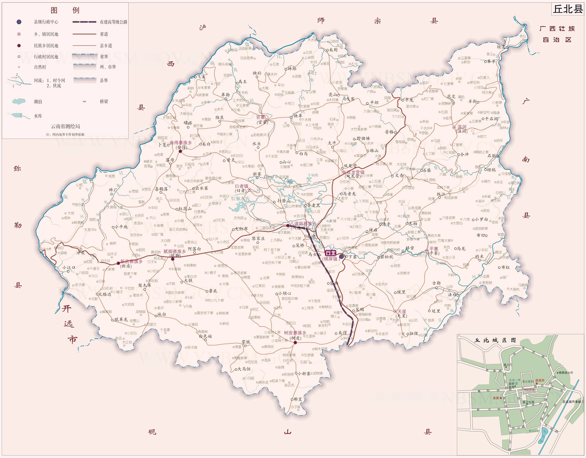

| 云南省文山州下辖县 | |||
| 中文名 | 丘北县 | 下辖地区 | 3个镇、9个乡 |
| 外文名 | Qiubei County | 政府驻地 | 锦屏镇 |
| 行政区代码 | 532626 | 电话区号 | 0876 |
| 行政区类型 | 县 | 邮政编码 | 663200 |
| 所属地区 | 云南文山州 | 人口数量 | 45.02万（2023末常住人口） |
| 地理位置 | 云南东南部 | 火车站 | 普者黑站 |
| 面积 | 5038km² | 车牌代码 | 云H |
| 地区生产总值 | 123.93亿元（2022年） | ||
丘北县，隶属云南省文山壮族苗族自治州。位于云南省东南部，东隔清水江与广南县毗邻， 南与砚山县、开远市接壤，西隔南盘江同弥勒市、泸西县相望，北与师宗县、西林县衔接，总面积5038平方公里。 截至2023年，丘北县常住人口45.02万人。截至2023年6月，丘北县辖3个镇、9个乡。
丘北县境内的喀斯特地貌，如仙境般令人神往。优越、 独特的自然地理条件，造就了“丘北辣椒”个体细长、色泽鲜艳、皮厚肉多、口感浓香纯正等特点。 丘北被誉为“中国辣椒之乡”，“辣”已经深深溶入丘北人的血脉之中。
视频来源：云南省地方志编纂委员会办公室
|
战国时期，（公元前475年-前221年），丘北境地属梁州之域。楚威王时（公元前339年-前329年）， 庄蹻率兵入滇进行开拓，云南附属于楚国，丘北属楚地。秦朝时，（公元前221年-前206年），在废周朝分封制， 建立郡县期间，“西南夷”未平，丘北在夜郎、句町部落区域之内。西汉元鼎六年，（公元前111年），汉武帝派郭昌、 卫广平定“西南夷”，以夜郎及其同种部落设置牂牁郡，丘北西部为牂牁郡镡封县，（治今平远街），其余大部为牂牁郡宛温县（治今维摩）。 三国（公元220年-280年），调整郡县设置，蜀汉建兴三年（225年），镡封、宛温县从牂牁郡划出归兴古郡，丘北为兴古郡镡封县。 西晋泰始七年（271年），武帝分益州的建宁、兴古、云南、交州之永昌，合四郡为宁州，治味县（今曲靖），丘北为宁州兴古郡镡封县。 东晋建武元年（317年），宁州刺史王逊对宁州郡县的设置进行分合调整，分兴古郡东部部分地区置西平郡；西部部分地区置梁水郡； 其余地区仍属兴古郡。丘北西部为梁水郡镡封县；东部为兴古郡宛温县。南朝·宋（420-479年），改宁州为南宁州，改宛温为宛暖，改镡封为镖封， 丘北属南宁州梁水郡。隋开皇年间（581-600年），改南宁州为南宁总管府，下设恭州、协州、昆州、废兴古郡，丘北属昆州辖地。唐南诏时（748-937年）， 丘北属南诏节度（治今昆明）。宋大理段氏统治时期（938-1254年），丘北属石城（曲靖）郡惠么部（维摩部）。元至元七年（1270年）， 丘北属阿宁（今开远）万户府维摩千户所。大德四年（1300年），改维摩千户为维摩州，录广西（今泸西）路。明洪武十五年（1382年）， 改广西路为广西府，丘北属云南布政使司广西府维摩州。万历二十二年（1594年），筑三乡城，录维摩州，万历二十八年（1600年）， 建三乡县（治今马者龙村）。后维摩州治与三乡县治移至盘龙山脚筑城（今旧城村）。雍正八年（1730年），设师宗州分防丘北州同， 辖勋庄、大百户、小百户、曰者、阿宁、大马恒、小马恒、戈底、者旦、宜常、六桂、普乐等400多个自然村，周长300余公里，1万多户居民。 雍正九年（1731年），丘北州同王纬选定在旧城东7.5公里的报马坡筑城时，仍称“丘北”分州。不称“报马坡” 分州（今丘北县城）。道光二十年（1840年）, 丘北升为正县,录广西管辖。民国18年（1929年），裁府废道，实行省、县两级制，丘北直录云南省都督府。32年（1943年），全县行政区划为2镇5乡, 即:锦屏镇（治锦屏）、双龙镇（治双龙营）、桂普乡（治温浏）、清源乡（治猫猫冲）、永靖乡（治曰者）、盘潆乡（治腻脚）、大树乡（治树皮）。 乡（镇）下辖保、甲。同年，改乡（镇）为区，恢复原来的乡，共七区、14乡、142保、1551甲。 1949年4月，成立丘北人民民主县政府，废除民国时期保甲制度，新建基层政权。全县设清龙、桂普、锦树、盘永、五槽（民国时属泸西县）、 山心（民国时属砚山县）6个区。从锦树区划出锦屏、下寨、密纳、马头山、清平、祥启、碧松就7个行政村，新设直属区。 1950年，五槽区、山心区分别划回泸西县、砚山县。5月，直属区改称第一区（治下寨），清龙区改称第二区（治双龙营）， 桂普区改称第三区（治温浏），锦树区改称第四区（治树皮），盘永区改称第五区（治曰者）。同时，改区人民政府为区公所。 1951年3月，新设第六区，治大铁。1952年，全县调整为6个区，52个乡，后又将52个乡划分为66个乡。1954年8月，撤第四区并入第一区， 分上、下半区。将66个乡调整为58个乡和1个镇（锦屏镇）。1957年1月，泸西县辖官寨区划归丘北建制为第七区，治官寨。同年10月， 全县实现人民公社化，农村实行政社合一，区改称公社。全县共12个人民公社。原来的乡改称连，实行军事化组织。1959年4月，公社名称全部改以地名命名， 同时又将连改为管理区。1961年5月，全县设6个区，并将12个大公社划分为38个中公社，将108个管理区缩减为96个管理区。1961年9月，维摩划归砚山管辖。 1962年，调整区，撤销中公社，管理区改称小公社，公社下为生产队，县辖8区1镇，96个小公社。1967年5月12日，实行军事管制，县成立军事管制委员会， 取代县人民委员会职能；区成立军事管制小组，取代区公所职能。1968年10月29日，撤消县军事管制委员会，成立革命委员会。12月15日，撤消八区一镇军事管制小组， 建立区（镇）、公社革命委员会。1970年11月，区、社体制调整，将区改为公社，仍称革命委员会。全县设13个公社，94个大队。1980年，县革命委员会改为县人民政府， 公社为管理委员会。1984年春，改革农村政社合一体制，以公社为基础设区，作为县人民政府的派出机构；以大队为基础设乡，作为农村基层政权组织；自然村建立村民委员会， 属群众组织。改革后，全县辖1镇14区99个乡（镇）1216个村民委员会。1987-1988年，进行区、乡体制改革，将区改为乡，下寨区并入锦屏镇，村公所、办事处为乡镇派出机构。 到1993年，全县共有1镇13乡89个行政村10个办事处和1251个自然村。 2005年10月，撤销戈寒乡，其行政区域并入双龙营镇；撤销羊街乡，其行政区域并入温浏乡。 行政划分 截至2023年6月，丘北县辖锦屏镇、双龙营镇、曰者镇、腻脚彝族乡、新店彝族乡、舍得彝族乡、树皮彝族乡、八道哨彝族乡、官寨乡、平寨乡、天星乡和温浏乡，共3镇9乡101个村民委（社区）1262个自然村。

×
|